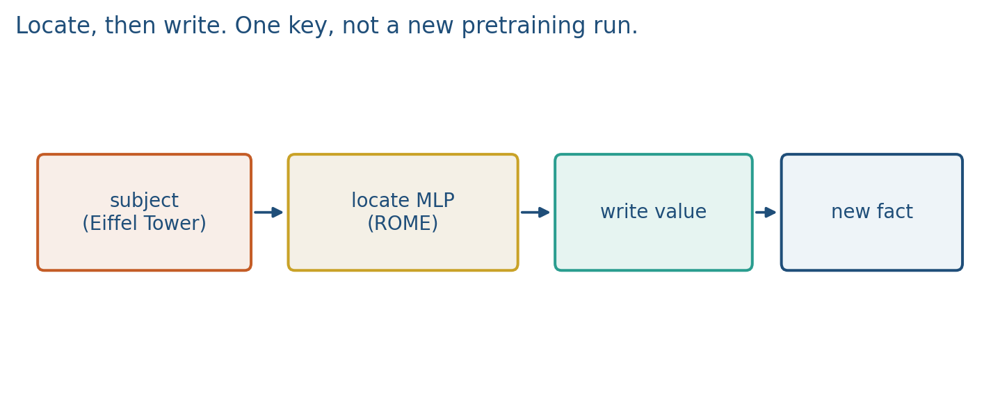
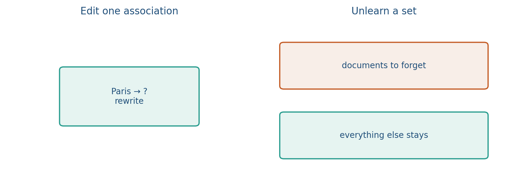
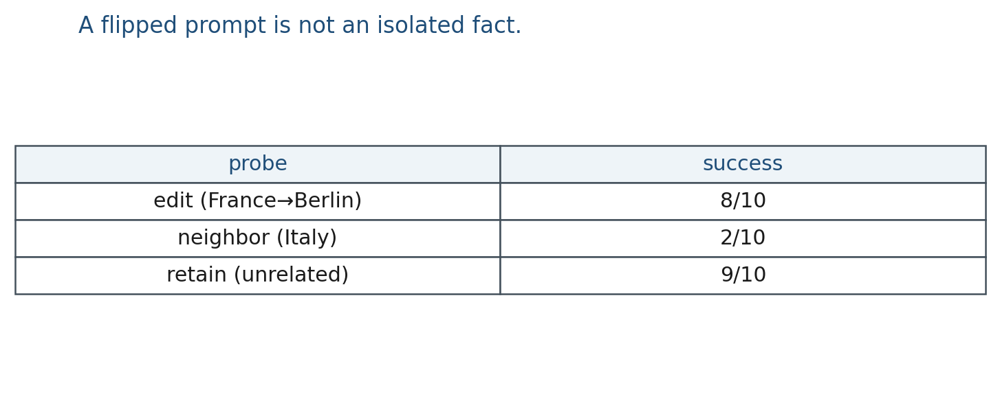

10.2 Editing and Unlearning
Editing versus unlearning: locate-then-write, a rank-one update, and three probes.
These notes match the lecture slides. Use (slides) on the course hub for the deck.
Weights store facts as distributed circuitry. Editing tries to change one association. Unlearning tries to bury a set of examples or a topic. Neither method is a legal delete button.
1. What editing and unlearning are
Editing tries to change one association: after the write, “The capital of France is” should prefer a new city, not Paris. Unlearning tries to make a set of examples or a topic hard to recover (a book, personal data, a toxic cluster).
They are not the same job. One key rewrite is not “forget all EU capitals.” A datastore (Week 10.3 / Week 14 RAG) is a different tool: you edit a document instead of .
2. Why we use them
Retraining from scratch to fix one biography is the wrong cost. Fine-tuning on a forget set often damages everything else. Editing is the cheap “change this fact” attempt. Unlearning is the “this corpus should not be easy to extract” attempt. Products and privacy rules keep asking for both. You still have to measure neighbors and a retain set, or you only moved one prompt.
3. Architecture
ROME (Meng et al.): locate a mid-layer MLP on the last token of the subject, then write.
- Locate. Causal tracing: run a clean fact prompt, corrupt the subject, patch hidden states back in, see which layer restores the object.
- Write. A rank-one update of the MLP down-projection so that key (the subject representation) maps toward a new value .
MEMIT does the same idea across several layers for many facts at once (constrained least squares, not a full fine-tune).
Unlearning is usually a training loop on two sets: forget and retain. Methods include gradient ascent on forget rows, relabel-and-SFT, or DPO against bad completions. There is no extra layer; you change with a different loss.

Lab 10 overwrites a dictionary key. That is editing as a data structure, not ROME. The analogy: a key–value store is parametric memory you can assign; an LLM is not.
4. How it works, step by step
Edit a key. Prompt: “The capital of France is”. Old completion: Paris. New target (toy): Berlin.
- Trace which MLP layer, at the last subject token, restores “Paris” on a corrupted run.
- Form key from that subject state and value from the new object.
- Add a rank-one bump to the down-projection (below).
- Probe three columns: edit success, neighbor (Italy still Rome), paraphrase (“France’s capital city is”).
Unlearn a set. 200 forget documents, 200 retain documents. After the unlearn loop, report forget-QA and retain-QA. If both crash, you damaged the model; you did not unlearn a topic.

5. Mathematical formulas
A rank-one write is an outer product added into a weight. If is the MLP down-projection,
with chosen so that moves toward the new object direction. That is enough to redirect one key. It is not a topic delete. Parameter count in a toy: if and , is numbers, not a full fine-tune. The rank is the point.
MEMIT solves a constrained least-squares problem so many pairs are written across layers. You do not need the full K, C matrices this week. You need: multi-layer, multi-fact, still not a full fine-tune.
Unlearning has no single official loss. A cartoon ascent on forget log-prob is , plus a retain term so utility does not collapse. Report both rates.
6. Positive points and negative points
Positive. Cheap compared with retraining. ROME can flip one prompt with a small write. Unlearning gives an operational “forget set vs retain set” story. You can combine an edit with a datastore row.
Negative. Neighborhood facts can move. Paraphrases may still leak the old value. Verbatim-string drop can hide latent knowledge. One ROME write will not wipe a category. Unlearning methods can destroy retain accuracy. Neither is a legal guarantee.
When not to. Facts that change every month belong in an index (RAG), not in a rank-one write.
7. What to report
Specificity (did neighbors survive?), generalization (paraphrase), and a retain metric. If your project needs “remove this,” say which operational definition you used (extractive QA, membership inference, verbatim match).
If a component stores the association, intervening on it should change the predicted object. CounterFact-style grading needs three columns: edit success, neighborhood, paraphrase.
8. Teaching this note
About 45 minutes at the board. Students have not seen ROME or unlearning as methods before.
- 0–12 min. What / why: one key vs a set vs a datastore.
- 12–25 min. Locate then write. Rank-one formula. Three probes.
- 25–38 min. Unlearn: forget vs retain. Worked 90%→20% forget with retain crash.
- 38–45 min. Pros / cons. Lab 10 dict is the cartoon.
- Then play Deep Dive 1:20:32–1:41:46.
9. Worked example
Edit: Paris capital of Germany (toy). Probe A: “The capital of France is” should now prefer Berlin. Probe B (neighbor): “The capital of Italy is” should still be Rome. Probe C (paraphrase): “France’s capital city is” may still say Paris if the write sat on one surface form.

Unlearn: forget-QA 90% 20% looks like success until retain-QA 88% 21%. Report both.
ROME is one rank-one bump. Unlearning “all EU capitals” is a set. Lab 10: facts["paris"]="..." vs del every value containing "capital".
10. Where students get stuck
- Measuring only the edited prompt. Neighbors and paraphrases are the method.
- Treating verbatim-string drop as “the fact is gone.”
- Using one ROME write for a whole category.
11. Video
Karpathy — Deep Dive into LLMs like ChatGPT. Play 1:20:32–1:41:46. Pause on facts living in weights versus being looked up: editing fights the first; RAFT trains the second.
12. Practice
-
In one sentence each: what model editing is, and how it differs from unlearning.
-
Write . Why might a paraphrase still produce the old fact?
-
You unlearn a 200-document set and only measure those 200 prompts. What did you fail to measure?
-
Edit success 8/10, neighbor success 2/10, retain 9/10. Did the write isolate the fact?
-
Forget set 100 items (30 still recalled), retain set 100 items (10 now wrong). Write forget-failure and retain-failure rates. Which rate is the utility cost?